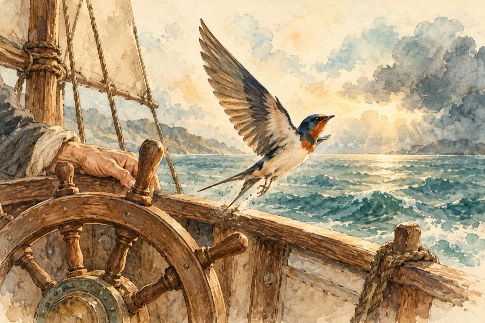

Moșia mea
Moșia mea este sufletul
Îl irig cu șoaptele din stele
Plantez sămânța-n inimă cu gândul
Martor îmi este soarele
Iar creierul îmi dă belșugul!
Azi a venit la mine o pasăre bolnavă
Era o biată rândunică
Eu la timonă pilotam o navă
Iar ea rănită era la o aripă!
Eu știu ce-nseamnă să trăiești în criză
Cum marea și furtuna m-au lăsat fără elice
Iar nava a intrat în derivă
Și la navă și la rândunică, vântul a fost complice!
După ce s-a vindecat rândunica
Și-a luat zborul fericită
Ca și cum nu s-a întămplat nimica
Doar a aflat de la sufletul meu cât e de iubită
Iar nava cu elicea nouă a fost pornită!
Vasile Groza